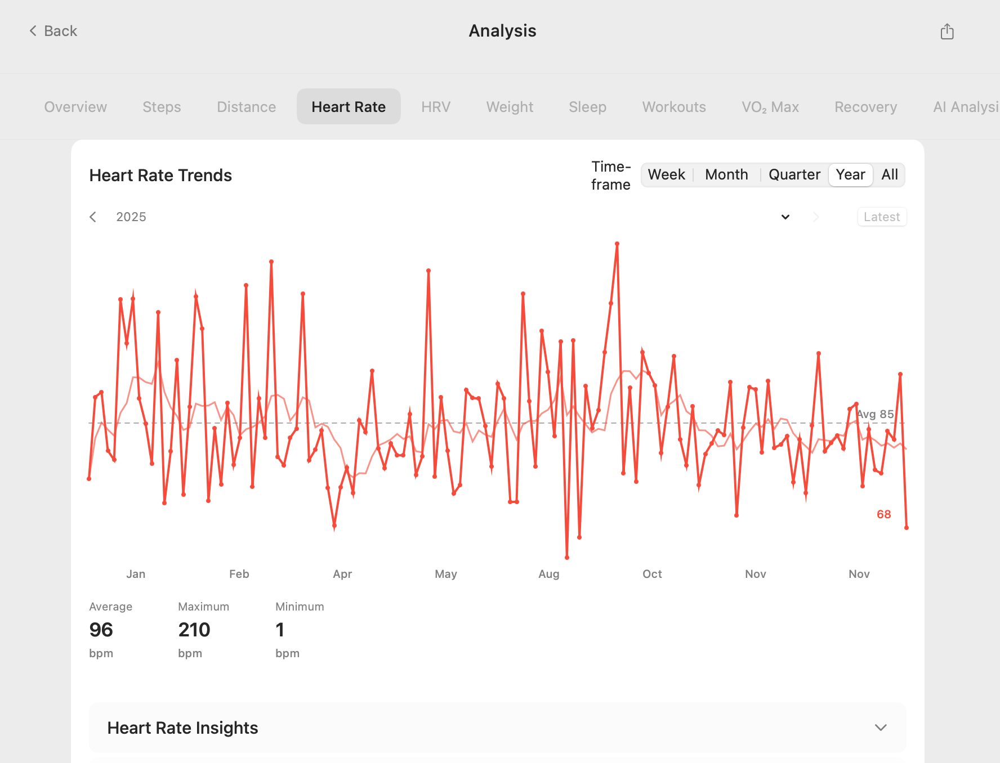
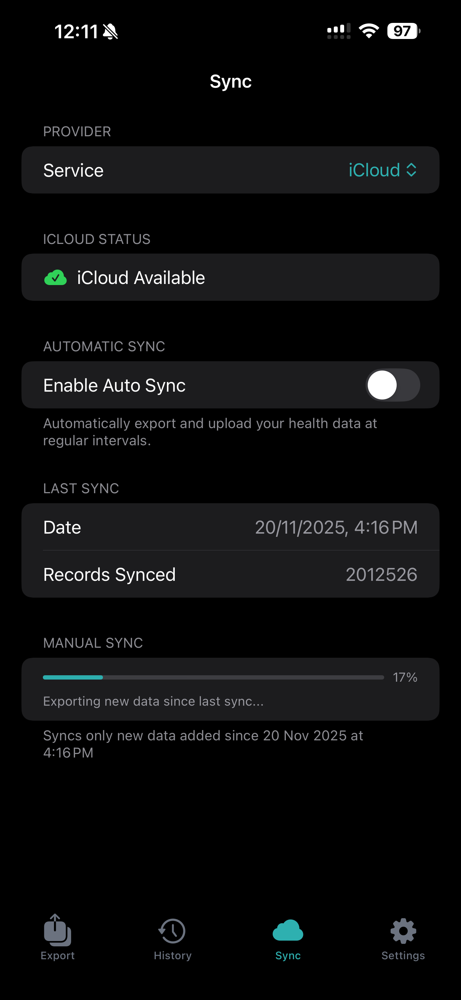

Export Apple Health Data to CSV on iPhone, No XML File
Export Apple Health data to CSV for Excel, Google Sheets, or Numbers. Health Data Export reads HealthKit on your iPhone and writes the CSV on the device, so you never parse export.xml. If you already have Apple's export.xml, use the free XML to CSV converter instead.
Health Data Export for iPhone. One-time purchase, no subscription or ads.
Quick answer: export Apple Health data to CSV
If you want Apple Health data in Excel, Google Sheets, or Numbers, export it as a CSV file first. In Health Data Export, grant read-only HealthKit permission, choose CSV, save or share the file from the iPhone share sheet, then open that CSV in your spreadsheet app.
- Open Health Data Export on your iPhone and allow the Health categories you want to export.
- Choose CSV when the export options appear.
- Save the CSV to Files, iCloud Drive, or AirDrop it to your Mac.
- Open the file in Excel, Google Sheets, or Numbers to sort, filter, chart, or share it.
Already used Apple's built-in export and only have export.xml? Use the free Apple Health XML to CSV converter instead of re-exporting.
One tap to export clean, analysis-ready CSV from Apple Health.
Why Exporting Directly to CSV is a Game-Changer
Apple's built-in export function provides a complex XML file that is notoriously difficult to work with. For most users, this format is a non-starter. A direct-to-CSV export method bypasses this headache entirely, giving you data that is:
- Immediately Usable: Open your health history directly in Microsoft Excel, Google Sheets, or Apple Numbers.
- Easy to Analyze: Every data type is organized into neat rows and columns, perfect for sorting, filtering, and creating charts.
- Simple to Share: Provide a universally compatible file to your doctor, physical therapist, or running coach.
- Archive-Ready: CSV is a plain-text format, making it ideal for a long-term, incorruptible Apple Health data backup.
How to Export Apple Health to CSV: The Easy Way
The most reliable and straightforward method is using a dedicated app designed for this purpose. Our "Health Data Export" app turns a complicated technical task into a few simple taps.
Step 1: Download "Health Data Export"
First, get the app from the App Store. It's a one-time purchase with no subscriptions or ads.
Step 2: Grant HealthKit Permissions
Upon first launch, the app will ask for permission to read your Apple Health data. This is a standard, secure process controlled by iOS. Our app processes all data locally on your device, so your private health information is never uploaded or shared.

Step 3: Select Your Format and Export
Tap the "Export" button. The app will bring up a share sheet where you can choose your desired format. Select CSV. You can then save the resulting file directly to your Files app, iCloud Drive, or AirDrop it to your Mac.

That's it. You now have a comprehensive CSV file of your entire health history, ready for analysis.
Who Needs an Apple Health CSV Export?
- Data-Savvy Individuals: Anyone who loves spreadsheets and wants to create their own custom health dashboards.
- Athletes and Fitness Enthusiasts: To track performance metrics over time, correlate training with recovery, and identify patterns.
- Patients: To provide doctors with detailed logs of metrics like blood glucose, blood pressure, or activity levels between appointments.
- Researchers: For cleaning and preparing datasets for health-related studies (always ensuring participant privacy and consent).
- Anyone seeking data portability: If you want a secure, independent copy of your health records, an Apple Health data backup in CSV format is a perfect solution.
How Our App Solves the Problem
The standard Apple export process is a dead end for most users. If you've ever tried it, you'll know the pain of dealing with the resulting export.xml file.
| Feature | Standard Apple Export | "Health Data Export" App |
|---|---|---|
| Primary Format | Complex XML | Clean CSV & JSON |
| Ease of Use | Difficult, requires technical skill | Simple, 3-tap process |
| Spreadsheet Ready | No, requires conversion | Yes, immediately |
| Time to Usable Data | 15-30 minutes (including conversion) | < 1 minute |
| Target User | Developers, data scientists | Everyone |
Our app acts as the essential bridge, letting you bypass the complicated XML step entirely. It's the "easy button" for getting your Apple Health CSV file. Once you have this file, you can take your analysis to the next level and analyze your health data with AI on your Mac.
Export Apple Health Data to CSV: FAQ
How do I export Apple Health data to CSV?
Open Health Data Export on your iPhone and allow the Health categories you want to export. Choose CSV, then save the file to Files or iCloud Drive, or AirDrop it to your Mac. Open it in Excel, Google Sheets, or Numbers.
Do I have to parse export.xml?
No. A direct-to-CSV export bypasses export.xml. If you already used Apple's built-in export and only have export.xml, use the free Apple Health XML to CSV converter instead of re-exporting.
Will the CSV open in Excel or Google Sheets?
Yes. Open the file in Microsoft Excel, Google Sheets, or Apple Numbers to sort, filter, chart, or share it.
Does the app upload my Apple Health data?
No. The app asks for read-only HealthKit permission. It processes all data locally on your device, so your private health information is never uploaded or shared.
Take Control of Your Health Data
Stop letting your valuable health history sit locked away in your phone. Turn it into a powerful tool for insight and analysis.